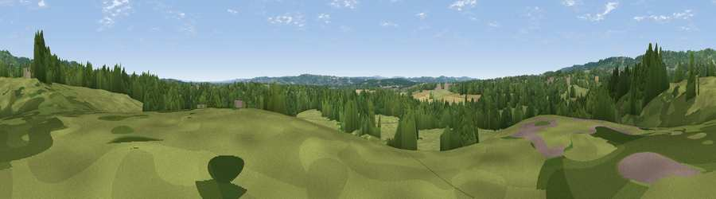

Viewpoint near Sevenoaks Weald
#42376 in England · top 65% of its area beats it · near Sevenoaks Weald · path 80 mWhere it is
The exact computed spot (TQ 54332 49803). Click the marker for map links.
Public access: the nearest public right of way is about 80 m away — the final stretch may cross private land. Computed from Natural England's CRoW access layer and OpenStreetMap rights of way — not the legal definitive map. Always verify locally.
The view, rendered

A 360° render of this exact spot computed from the terrain model, tree cover and land cover — summer colours, afternoon light, calibrated against photographs of famous viewpoints. Real trees, hedges and buildings will differ in detail.
The panorama
Grey silhouette: terrain skyline in each direction (720 bearings, Earth curvature and refraction included). Dashed green: skyline with trees (+15 m) and buildings (+8 m) as obstacles. Blue strip: how far the ground is visible on each bearing.
Where the view opens
Wedge length = distance to the farthest visible ground on that bearing (vegetation-aware). Rings at 10, 25 and 50 km.
What fills the view
51% grassland · 38% woodland · 9% cropland · 1% built-up
Angular shares of the visible panorama (visual magnitude), not map area. Landscape diversity 0.43 (0–1 Shannon).
Key numbers
More beautiful places nearby
The staircase of upgrades: each row has a higher view potential than everything closer. Driving times are estimates from straight-line distance, calibrated against real road routing — check an actual route before setting out.
| Place | Direction | Drive | Score |
|---|---|---|---|
| Viewpoint near Sevenoaks Weald | NNW · 3 km | ~7 min | 56.9 |
| Viewpoint near Sevenoaks Weald | NW · 4 km | ~9 min | 60.2 |
| Viewpoint near Shipbourne | NE · 4 km | ~9 min | 63.0 |
| Viewpoint near Shipbourne | NE · 4 km | ~10 min | 66.2 |
| Viewpoint near Lower Kingswood | W · 31 km | ~48 min | 67.7 |
| Brightling Obelisk [Brightling Down] | SSE · 31 km | ~49 min | 69.1 |
| Viewpoint near Coldharbour | W · 40 km | ~59 min | 70.0 |
| Malling Hill | SSW · 40 km | ~60 min | 73.8 |
51.22656, 0.20887 · source: osm peak · position refined by local search. Computed location — check access rights before visiting.